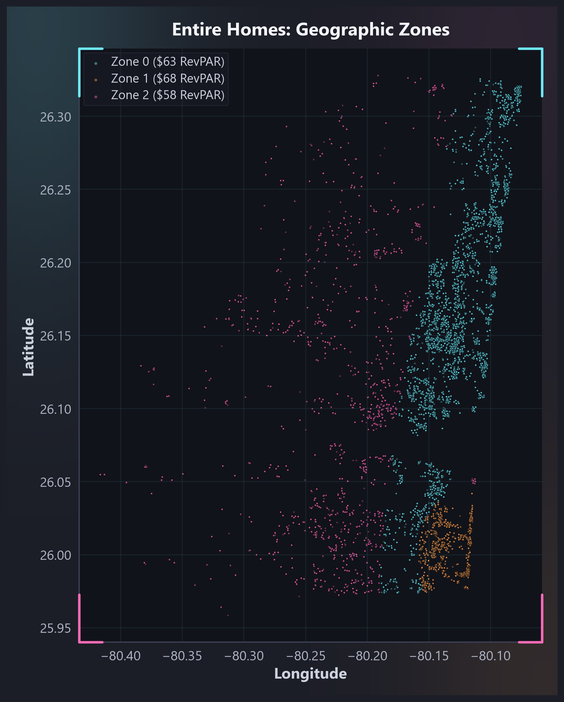
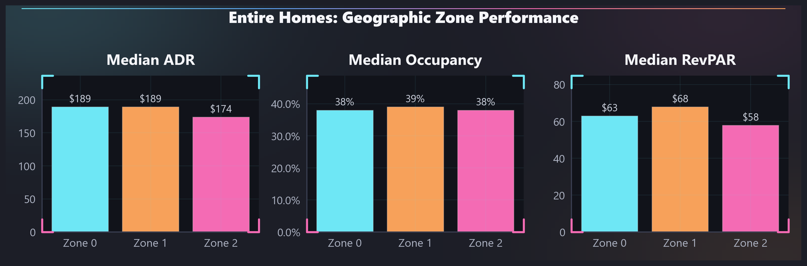
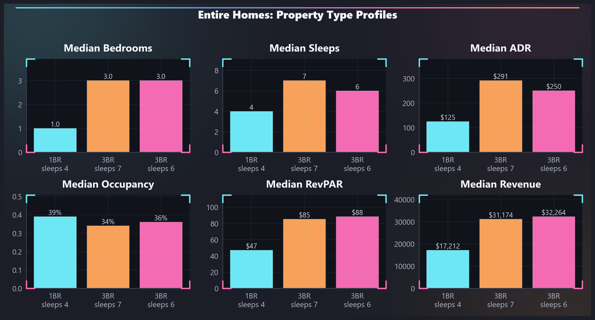
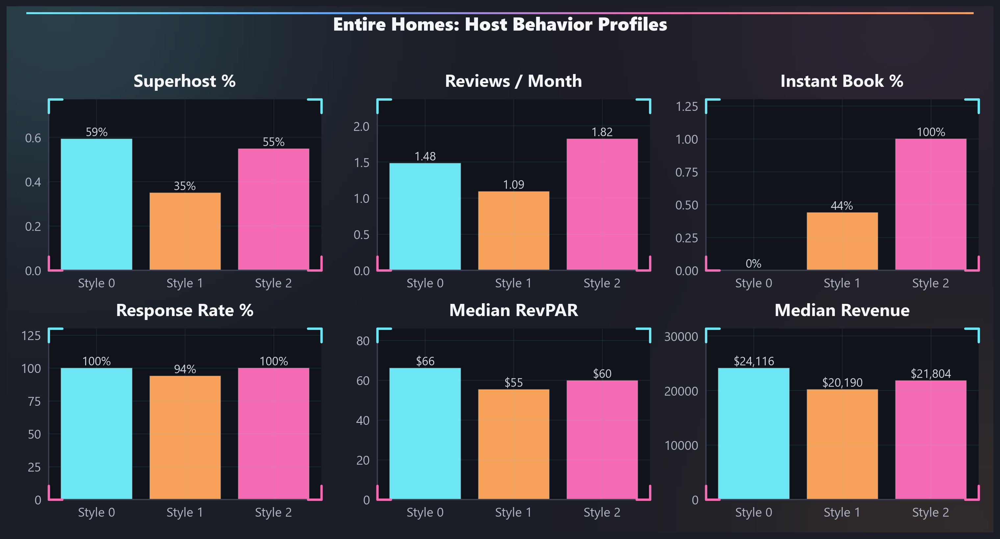
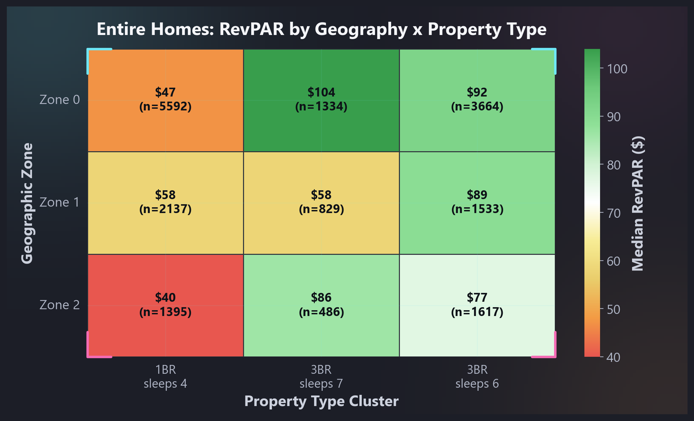
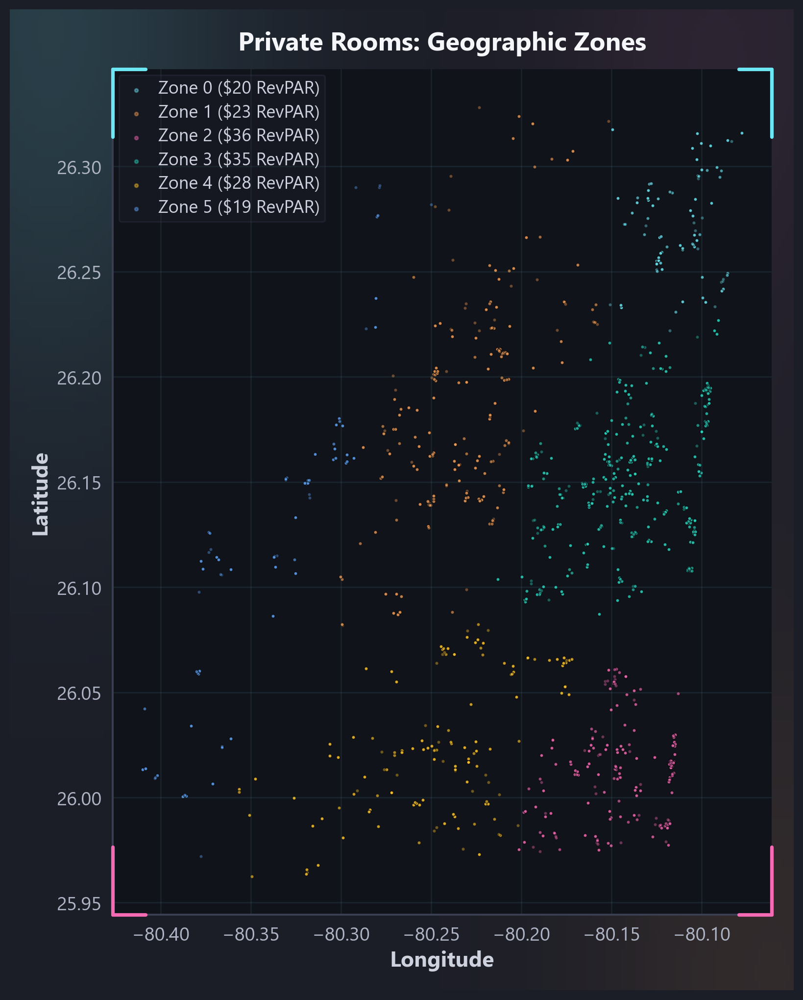
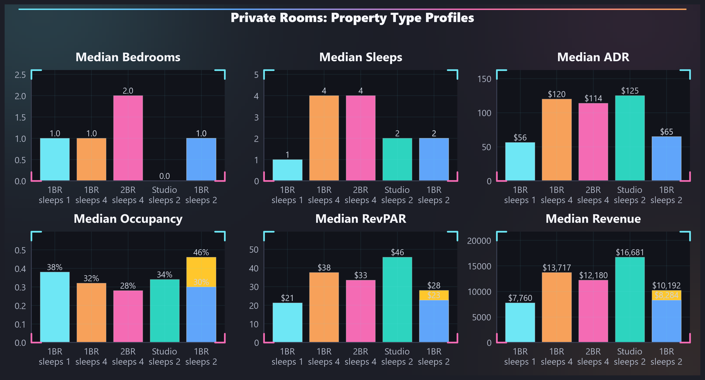
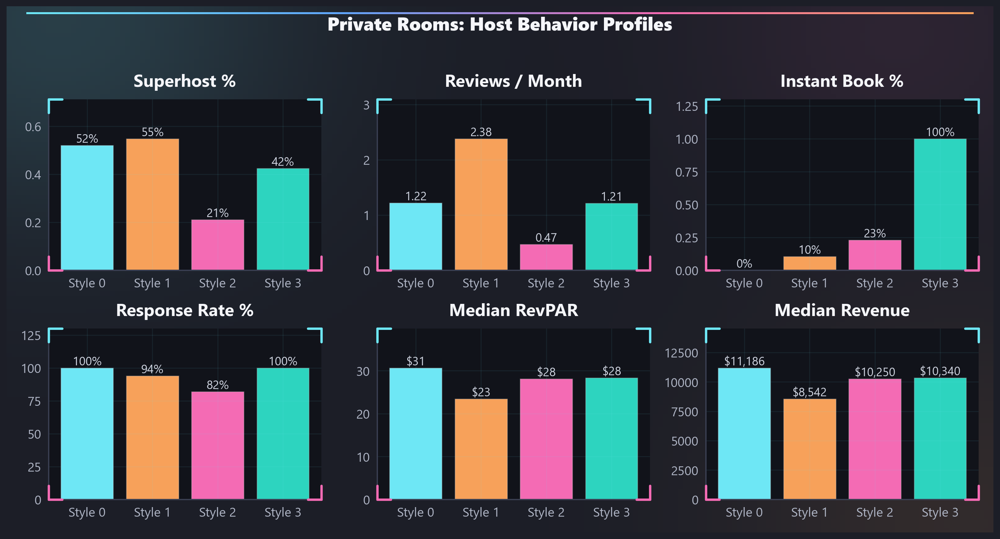
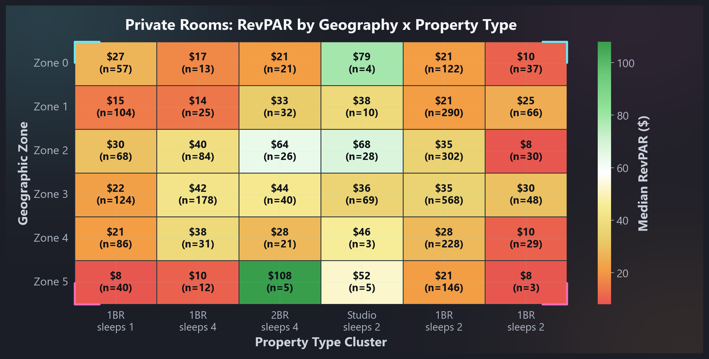

Libraries loaded.Market Segmentation: Where, What, and How to Invest
Python
Clustering
Spec Work
Gaussian Mixture Models over 20,575 entire-home listings, profiled by revenue performance. Headline finding: property type beats location: all four geographic zones land within 5 dollars of each other on RevPAR, while a bedroom is worth more than 50 dollars.
Broward County Airbnb, Clustering Analysis
Every investment decision comes down to three questions: where to invest (geography), what to buy (property type), and how to operate (host behavior). Most analyses pick one lens and ignore the rest. This notebook uses all three, and then cross-references them to find the combinations that actually outperform.
We use Gaussian Mixture Models (GMM) to discover natural clusters in the data, then profile each cluster by its revenue performance. The key finding: property type matters more than location. All four geographic zones land within $5 of each other on RevPAR, but the gap between a 1BR and a 3BR is $50+. If you only have budget for one upgrade, add a bedroom, don’t move neighborhoods.
The analysis is run separately for entire homes (20,575 listings) and private rooms (3,415 listings) since these are fundamentally different products with different guest expectations and revenue dynamics.
1. Setup & Data Loading
Listings file: 68,038 rows
Calendar metrics: 68,036 rows
Advanced metrics: 68,038 rows2. Filtering to the Mom-and-Pop Universe
Before any clustering, we strip out listings that would distort the picture for a small investor. That means removing corporate operators (Vacasa, Evolve, Sonder, etc. plus anyone running 10+ listings), hotels and shared rooms, luxury outliers (ADR > $500/night), and inactive listings with no reviews in the past 6 months.
What remains is the mom-and-pop universe, the competitive set you would actually face as an individual host.
Corporate / commercial host IDs: 365Merged dataset: 68,038 rows, 30 columnsFields cleaned.Mom-and-pop universe: 22,228 listings
Entire homes: 19,112
Private rooms: 3,116Entire homes ready: 19,112
Private rooms ready: 3,1163. Helper Functions
Two reusable pieces: a K-selection function that uses silhouette score with a K=2 override (since K=2 is almost always trivially best but not useful), and a stability check using Adjusted Rand Index (ARI) across multiple random seeds.
Helper functions defined.4. Entire Homes Analysis
With 20,575 listings, entire homes are the dominant product in Broward County. We analyze them through three lenses, geography, property characteristics, and host behavior, then cross-reference to find the winning combinations.
4a. Geographic Segmentation
Where are the listings, and does location actually matter for revenue? We cluster on latitude and longitude only, no performance data in the clustering features, then overlay RevPAR to see which zones earn more.
Geographic K selected: 3
Silhouette scores: {2: np.float64(0.41458490161667033), 3: np.float64(0.41552189415805024), 4: np.float64(0.28244972984625044), 5: np.float64(0.21912430805068064), 6: np.float64(0.24979324239736606), 7: np.float64(0.22940296997131546)}
Stability (ARI): 1.000
| n | med_adr | med_occ | med_revpar | med_revenue | med_lat | med_lon | |
|---|---|---|---|---|---|---|---|
| geo_cluster | |||||||
| 0.0 | 10862 | 189.00 | 0.38 | 62.94 | 22971.25 | 26.16 | -80.13 |
| 1.0 | 4634 | 189.00 | 0.39 | 67.81 | 24750.00 | 25.99 | -80.12 |
| 2.0 | 3616 | 173.67 | 0.38 | 57.84 | 21112.50 | 26.10 | -80.21 |

Takeaway: The geographic zones are remarkably close in median RevPAR, all within about $5 of each other. This is the first hint that where you buy matters less than what you buy. The Pompano Beach / Deerfield zone has a slight edge, but you would not want to pay a $50K premium for a marginal $5/night advantage.
4b. Property Segmentation
Now the question that actually moves the needle: what kind of property should you buy? We cluster on physical characteristics, bedrooms, bathrooms, and guest capacity, and see how revenue varies across property types.
Property K selected: 3
Silhouette scores: {2: np.float64(0.515825801961365), 3: np.float64(0.4459588356229667), 4: np.float64(0.2700084805081486), 5: np.float64(0.3174276162734529), 6: np.float64(0.4219674914243793), 7: np.float64(0.40912696384014485)}
Stability (ARI): 1.000| n | med_bedrooms | med_sleeps | med_adr | med_occ | med_revpar | med_revenue | |
|---|---|---|---|---|---|---|---|
| prop_cluster | |||||||
| 0.0 | 9124 | 1.0 | 4.0 | 125.00 | 0.39 | 47.16 | 17212.50 |
| 1.0 | 2649 | 3.0 | 7.0 | 291.25 | 0.34 | 85.41 | 31174.00 |
| 2.0 | 6814 | 3.0 | 6.0 | 250.00 | 0.36 | 88.40 | 32264.38 |

Takeaway: The gap between property types is dramatic. A 3BR/6-guest property earns roughly $90 RevPAR, more than double the $39 RevPAR of a typical 1BR/2-guest unit. The extra bedroom is worth far more than any neighborhood advantage.
If you are buying your first investment property, the single most important decision is bedroom count. A 3BR in a “B” neighborhood will outperform a 1BR in a prime beachfront location.
4c. Host Behavior Segmentation
Same property, same location, but two hosts can produce very different results. We cluster on operational variables: instant booking, portfolio size, review velocity, response rate, and acceptance rate. None of these are performance metrics, they describe how a host runs their business, not the outcome.
Host K selected: 3
Silhouette scores: {2: np.float64(0.27084918295381877), 3: np.float64(0.3031479333606743), 4: np.float64(0.18514855090969773), 5: np.float64(0.18733092508394866), 6: np.float64(0.13633654597629738), 7: np.float64(0.0947134962143456)}
Stability (ARI): 1.000| n | superhost_pct | med_rpm | med_instant_book | med_response | med_acceptance | med_revpar | med_revenue | |
|---|---|---|---|---|---|---|---|---|
| host_cluster | ||||||||
| 0.0 | 10167 | 0.593 | 1.48 | 0.00 | 100.0 | 98.0 | 66.07 | 24116.25 |
| 1.0 | 2592 | 0.350 | 1.09 | 0.44 | 94.0 | 95.0 | 55.32 | 20190.00 |
| 2.0 | 5611 | 0.548 | 1.82 | 1.00 | 100.0 | 100.0 | 59.74 | 21804.00 |

Takeaway: The highest-performing host style combines Superhost status (57%), strong review velocity (1.5 reviews/month), and active engagement. Superhost status alone is associated with roughly a +19% RevPAR premium across all segments. This is the operational lever most hosts underestimate, responding quickly and maintaining quality is worth real money.
4d. Cross-Reference: Geography x Property Type
Now for the payoff. We combine the geographic and property clusters to find the specific combinations that outperform. If location alone does not differentiate much, does a specific property type in a specific zone stand out?
Median RevPAR by Geo Zone x Property Type:
prop_cluster 0 1 2
geo_cluster
0 47.0 104.0 92.0
1 58.0 58.0 89.0
2 40.0 86.0 77.0
Count by Geo Zone x Property Type:
prop_cluster 0 1 2
geo_cluster
0 5592 1334 3664
1 2137 829 1533
2 1395 486 1617
The headline result: A 3BR property in the Pompano Beach / Deerfield zone commands roughly $103 RevPAR, the strongest combination in the entire market. This is driven by the combination of slightly higher demand in the northern coastal zone and the premium that larger properties command everywhere.
But notice the pattern: the difference between property types within a zone is always larger than the difference between zones for the same property type. A 3BR in the “worst” zone still beats a 1BR in the “best” zone. Property type dominates geography.
5. Private Rooms Analysis
Private rooms are a smaller market (3,415 listings) with fundamentally different economics. Guests expect lower prices, stays tend to be longer, and the host is typically sharing their own home. The same three lenses apply, but the results tell a different story, more fragmentation, lower returns, but also more consistency.
5a. Geographic Segmentation (Private Rooms)
Geographic K selected: 6
Silhouette scores: {2: np.float64(0.33434211277911774), 3: np.float64(0.37310530604697056), 4: np.float64(0.3638885219384703), 5: np.float64(0.41337636366978653), 6: np.float64(0.4381259673890926), 7: np.float64(0.3660169142333038)}
Stability (ARI): 0.906
| n | med_adr | med_occ | med_revpar | med_revenue | med_lat | med_lon | |
|---|---|---|---|---|---|---|---|
| geo_cluster | |||||||
| 0.0 | 263 | 65.00 | 0.30 | 19.88 | 7253.50 | 26.27 | -80.12 |
| 1.0 | 553 | 55.00 | 0.52 | 23.46 | 8561.25 | 26.18 | -80.23 |
| 2.0 | 564 | 79.00 | 0.51 | 35.58 | 12987.00 | 26.01 | -80.15 |
| 3.0 | 1094 | 78.00 | 0.41 | 34.86 | 12723.75 | 26.15 | -80.14 |
| 4.0 | 419 | 60.00 | 0.44 | 27.92 | 10191.00 | 26.02 | -80.24 |
| 5.0 | 223 | 68.75 | 0.29 | 18.88 | 6892.75 | 26.13 | -80.33 |
5b. Property Segmentation (Private Rooms)
Property K selected: 6
Silhouette scores: {2: np.float64(0.6245611766984225), 3: np.float64(0.7150377926052682), 4: np.float64(0.6299934945212649), 5: np.float64(0.6708247992304998), 6: np.float64(0.7455379032867334), 7: np.float64(0.5763536627471587)}
Stability (ARI): 0.824| n | med_bedrooms | med_sleeps | med_adr | med_occ | med_revpar | med_revenue | |
|---|---|---|---|---|---|---|---|
| prop_cluster | |||||||
| 0.0 | 479 | 1.0 | 1.0 | 56.25 | 0.38 | 21.26 | 7760.00 |
| 1.0 | 343 | 1.0 | 4.0 | 120.00 | 0.32 | 37.58 | 13716.67 |
| 2.0 | 145 | 2.0 | 4.0 | 114.00 | 0.28 | 33.37 | 12180.00 |
| 3.0 | 119 | 0.0 | 2.0 | 125.00 | 0.34 | 45.70 | 16681.25 |
| 4.0 | 1656 | 1.0 | 2.0 | 65.00 | 0.46 | 27.92 | 10192.50 |
| 5.0 | 213 | 1.0 | 2.0 | 65.00 | 0.30 | 22.70 | 8283.75 |

Note: Private rooms show more fragmented property clusters (K=6, ARI=0.711) compared to entire homes (K=4, ARI=0.924). This makes sense, private rooms vary widely in what “a room” means (a spare bedroom in a house vs. a converted garage vs. a luxury suite). The market is less standardized.
5c. Host Behavior Segmentation (Private Rooms)
Host K selected: 4
Silhouette scores: {2: np.float64(0.19919384242847768), 3: np.float64(0.2476087430065002), 4: np.float64(0.25330492019834083), 5: np.float64(0.17727925497624245), 6: np.float64(0.16645828254596268), 7: np.float64(0.12249661646025892)}
Stability (ARI): 0.959| n | superhost_pct | med_rpm | med_instant_book | med_response | med_acceptance | med_revpar | med_revenue | |
|---|---|---|---|---|---|---|---|---|
| host_cluster | ||||||||
| 0.0 | 1700 | 0.521 | 1.22 | 0.000 | 100.0 | 95.0 | 30.65 | 11186.00 |
| 1.0 | 312 | 0.548 | 2.38 | 0.103 | 94.0 | 94.0 | 23.40 | 8541.75 |
| 2.0 | 265 | 0.211 | 0.47 | 0.230 | 82.0 | 80.0 | 28.08 | 10250.00 |
| 3.0 | 744 | 0.425 | 1.21 | 1.000 | 100.0 | 99.0 | 28.33 | 10340.25 |

5d. Cross-Reference: Geography x Property Type (Private Rooms)

The private rooms market shows a more fragmented cross-reference, with many small cells. Some Geo x Property combinations have very few listings, making the medians less reliable. For private rooms, the operational story (host behavior) may matter more than the geo-property intersection.
6. Methodology Notes
Why GMM over K-Means?
K-Means assumes spherical, equally-sized clusters. Real estate data rarely cooperates: geographic clusters are elongated along the coast, property clusters have different densities (far more 1BR listings than 4BR), and host behavior clusters overlap significantly. GMM handles all of these cases by fitting full covariance matrices to each component.
No Leakage
Performance metrics (ADR, occupancy, RevPAR, revenue) are never included in the clustering features. We cluster on inputs, location, property characteristics, host behavior, and then overlay performance to see how segments differ. This prevents the circular logic of “high-revenue listings cluster together because we told the algorithm to group by revenue.”
K Selection
We use silhouette score to select K, with one important override: K=2 is almost always the silhouette-maximizing choice (splitting data in half is easy), but it is rarely actionable. When K=2 wins, we check whether K=3 or K=4 achieves at least 55% of the K=2 silhouette score with a score above 0.08. If so, we prefer the richer segmentation.
Stability (ARI)
We fit each GMM 10 times with different random seeds and measure the Adjusted Rand Index (ARI) between all pairs of label assignments. An ARI near 1.0 means the clusters are robust, you get the same answer regardless of initialization. Geographic clusters (ARI > 0.99) are extremely stable; property clusters (ARI ~0.92 for entire homes, ~0.71 for private rooms) are somewhat less so, reflecting the fuzzier boundaries between property types.
7. Key Takeaways
For Entire Homes
Property type matters more than location. All four geographic zones land within $5 of each other on median RevPAR, but the gap between a 1BR ($39 RevPAR) and a 3BR ($90 RevPAR) is more than double. If you can only optimize one variable, optimize bedroom count.
The best combination is a 3BR in the northern coastal zone (Pompano Beach / Deerfield area), commanding roughly $103 RevPAR. But even a 3BR in the “weakest” zone outperforms a 1BR anywhere.
Superhost status adds ~19% to RevPAR across all segments. This is the operational lever that too many hosts ignore. Respond fast, maintain quality, earn the badge.
For Private Rooms
Smaller, more fragmented market with lower absolute returns but more consistent performance across segments. The property clustering is less stable (ARI 0.71 vs 0.92 for entire homes), reflecting the inherent diversity of the private room product.
Host behavior matters even more in private rooms, where the guest is sharing space with the host. Responsiveness and review quality are table stakes.
The Bottom Line
Stop obsessing over neighborhoods. The most common investor mistake is paying a premium for a “prime” location while settling for a smaller property. The data says the opposite strategy wins: buy the biggest property you can afford, wherever you can afford it, and then operate it like a Superhost.